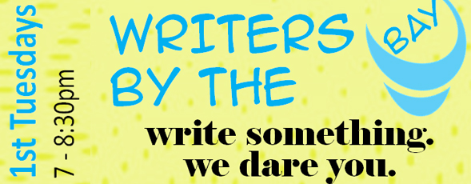

Montgomery County Events
Beginning Fantasy Fiction
Event Type: Workshop - 2 sessions
Price: $69-80
Date: 10/14/2015
Start Time: 7:30 PM
Location:
The Writer's Center
4508 Walsh Street, Bethesda, MD 20815
Description: The first session of this workshop will be devoted to the basics of fiction and story construction. In the second session, participants will do a start-up exercise to help get them started on a possibly longer work.
Kensington Park Library Book Discussion Group
Event Type: Book Discussion
Age Group(s): Adult, Seniors, Teens
Price: Free
Date: 10/21/2015
Start Time: 7:00 PM
End Time: 8:30 PM
Location: Davis Library
6400 Democracy Blvd., Bethesda, MD 20817
(240-777-0922)
Description: Current and new Kensington Park Library Discussion Group participants. The title for September and October's book discussion group has been selected. The title has been also selected as the "One Maryland, One Book" selection. This year’s book is The Boys in the Boat: Nine Americans and Their Epic Quest for Gold at the 1936 Berlin Olympics by Daniel James Brown. Copies of this title will be available at the Kensington Park Library until October 10. After this date copies will be available at the Davis library where the Kensington Park Library Book Discussion Group will temporary meeting during the Kensington Park Library's Refresh Project.
The Northern MoCo Writers Meetup Group
Event Type: Meet up
Date: 10/22/2015
Start Time: 7:00 PM
Location:
Olney Library
3500 Olney Laytonsville Rd, Olney, MD 20832
Description:
Are you a writer? Wordsmiths of every genre are invited to join our writing, review and critique group located in Northern Montgomery County, Maryland. Please be aware this is a working group for writers engaged in their craft of writing for publishing or for personal satisfaction. We welcome novice and accomplished writers. We engage in writing prompts, perform literary readings of members works to the public, host workshops with notable authors on topics of interest in writing.
Teen Writer's Club
Event Type: Special Event
Age Group(s): Teens
Date: 10/24/2015
Start Time: 12:00 PM
End Time: 1:30 PM
Location:
Kensington Row Bookshop
3786 Howard Ave, Kensington, MD 20895
Description: Discover techniques for creative writing
-Experiment with writing exercises
-Get constructive feedback on your own writing
-Learn how to revise your own work • Meet others who share your love of writing
Presented by writer Carolee Noury and cosponsored by Maryland Writers’ Association
Anne Arundel County Events
NANOWRIMO Write-in
Event Type: Special Event
Age Group: Teens
Price: Free
Date: 11/09/2015
Start Time: 6:00 PM
End Time: 8:00 PM
Location:
Severna Park Community Library
45 West McKinsey Road, Severna Park, MD 21146
Description: Celebrate National Novel Writing Month with fellow authors by participating in writing activities and challenges!
Award Winning Book Club
Event Type: Special Event
Age Group: Adults
Price: Free
Date: 11/05/2015
Start Time: 7:00 PM
End Time: 8:00 PM
Location:
Severna Park Community Library
45 West McKinsey Road, Severna Park, MD 21146
Description: War Dances by Sherman Alexie
In the title story, a famous writer must decide how to care for his distant father who is slowly dying a "natural Indian death" from alcohol and diabetes, just as he learns that he himself may have a brain tumor. Winner of the Pen/Faulkner Award in 2010, Alexie delivers a heartbreaking, hilarious collection of stories that explores the precarious balance between self-preservation and external responsibility in art, family, and the world at large.
Calvert County Events
Writers By the Bay
Event Type: Workshop
Age Group: Anyone
Price: Free
Date: FIRST TUESDAY OF THE MONTH
Start Time: 7:00 PM
End Time: 8:30 PM
Location:
Calvert Library Prince Frederick
850 Costley Way, Prince Frederick, MD 20678
Description:
Looking for a writers' group? All writers and would-be writers are welcome to come for critique & camaraderie. Led by Peter Abresch. Several well-published authors participate in this group.

Memoirs & Creative Writing Workshop
Event Type: Workshop
Age Group: Adult/All Ages
Price: Free
Date: 10/14/15
Start Time: 2:00 PM
End Time: 3:30 PM
Location:
Calvert Library Prince Frederick
850 Costley Way, Prince Frederick, MD 20678
Description:
Join author and editor Elisavietta Ritchie as she encourages the art of creative memoir writing. Bring 12 double-spaced copies of your piece of memoir, 500-800 words, to work on and share with the group. Writing to be inspired by the themes in the One Maryland One Book title Boys in the Boat.
Frederick County Events
Word Play: A Monthly Writing Workshop
Event Type: Workshop
Age Group: Adults and Teens
Price: Free
Date: 10/12/2015
Start Time: 6:00 PM
End Time: 8:00 PM
Location:
Walkersville Branch Library
Panera Bread, 1700 Kingfisher Drive, Frederick, MD
Description:
Join us every month for an inclusive writing workshop where participants will have an opportunity to share their work and refine their writing. The event is open to all but is
specifically geared for adults with intellectual disabilities.